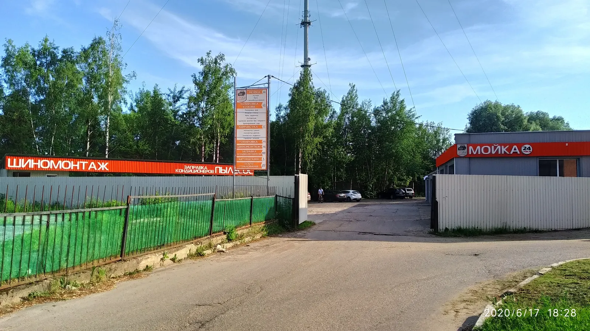
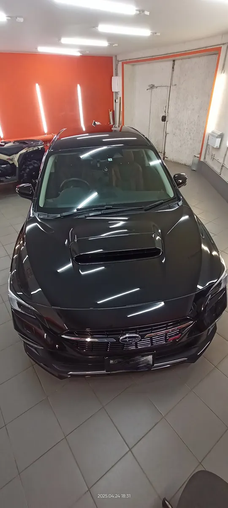
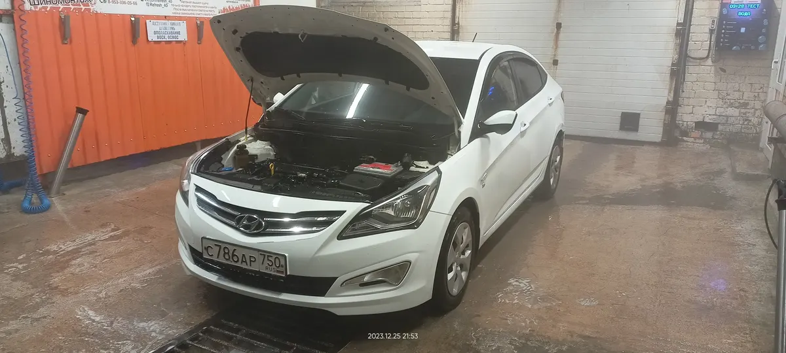
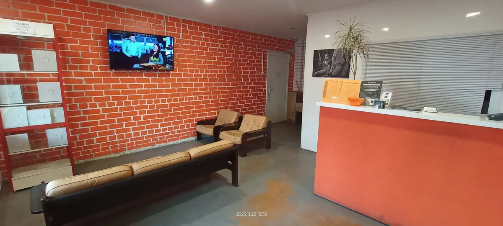

Автомойка · Детейлинг · Круглосуточно
Мойка и детейлинг в Обнинске, куда записываются заранее
4,6 на Яндекс.Картах при 473 оценках. Закрытые боксы, самомойка, шиномонтаж и полировка — круглосуточно.
- 4,6 на Яндекс.Картах · 208 отзывов
- Круглосуточно · ул. Королёва, 13А
- Мойка, самомойка, шиномонтаж, детейлинг

Как устроен визит
Входит
- Выбрали услугу и записались на сайте — заявка сразу в WhatsApp
- Приехали в назначенное время — принимают без очереди
- Закрытый бокс: зимой тепло, летом без сушки на солнце
- По желанию: химчистка, полировка, шиномонтаж
- Забираете чистую машину
Отдельно, если нужно
- Круглосуточно — есть ночная смена
- Самомойка в закрытых боксах, 3 поста
- Оплата картой, наличными или переводом
- Можно оставить машину на ночь — к утру будет готово
Цены — известны до поездки
Честные ориентиры: диапазон мойки кузова с карточки, комплекс — по отзывам клиентов. Точную стоимость называем при записи.
Мойка
- Мойка кузовадиапазон с карточкиот 100 ₽
- Комплексная мойка≈ час работы — из отзывов3 000 ₽
- Самомойка (пост самообслуживания)закрытый боксот 100 ₽
Детейлинг и шиномонтаж
- Полировка + защита ЛКПGyeon, Ceramic Pro — прайс карточки25 000 ₽
- Химчистка салонауточнить
- Шиномонтаж с балансировкойуточнить
Стоимость по вашей машине называем до начала работ — без сюрпризов в конце.
Четыре шага — и машина чистая
- 01
Выбрали услугу
Мойка кузова, комплекс, самомойка, шиномонтаж или детейлинг.
- 02
Записались онлайн
На сайте за минуту — заявка приходит в WhatsApp с вашим номером.
- 03
Приехали ко времени
Принимают по записи без очереди — как и обещано.
- 04
Забираете результат
Клиенты пишут: «после комплекса машину не узнала — как новая».



Что обещаем каждому клиенту
Запись с подтверждением
Вы выбираете услугу и время на сайте — заявка приходит в WhatsApp и остаётся у вас.
Без очередей по записи
Приезжаете ко времени — бокс свободен, работа начинается сразу.
Цена до поездки
Диапазоны на сайте, точную стоимость называем при записи — без «а это ещё доплатить».
Закрытые боксы
Мойка в помещении: зимой тепло, летом без разводов от солнца.
Отзывы с Яндекс.Карт
«Отличная мойка «у дома». Удобное расположение, приятные администраторы и хорошие мойщики. Ребята хорошо моют машину, обязательно с проёмами. Всё сушат, уборка салона также на 5. И всё это за адекватный прайс.»
Степан Орлов · 1 марта 2024
«Единственная качественная и недорогая мойка в Обнинске, где учитывают пожелания клиента. Езжу сюда уже второй год на всех своих машинах, качество как обычно на высоте, цены не повышались.»
Danila · 26 октября 2025
«Делают комплекс буквально за час, заранее можно записаться. Машина после мойки действительно чистая. Полировалась почти год назад — если смотреть с фонариком, паутинок практически нет.»
Егор · 29 мая
Отзывы с карточки на Яндекс.Картах, без правок.
Частые вопросы
Вы правда работаете круглосуточно?
Да, без выходных. Есть ночная смена — клиенты отмечают отдельным отзывом.
Сколько стоит мойка?
Мойка кузова — от 100 ₽ (диапазон с карточки 100–2000 ₽), самомойка — от 100 ₽, комплекс — около 3 000 ₽ и около часа работы. Точную цену по вашей машине называем при записи: +7 (953) 336-05-66.
Можно записаться онлайн?
Да: выберите услугу, день и время на сайте — заявка придёт нам в WhatsApp вместе с вашим номером, мы подтвердим запись.
Что ещё кроме мойки?
Шиномонтаж и балансировка, химчистка салона, полировка и защита ЛКП (Gyeon, Ceramic Pro), бронирование. Можно оставить машину на ночь — к утру будет готово.
Есть самомойка?
Да, три поста самообслуживания в закрытых боксах — зимой тепло, давление и пена достойные.
Запишитесь онлайн — или просто заезжайте, мы круглосуточно
- Адрес
- Обнинск, ул. Королёва, 13А, Обнинске
- Часы
- Круглосуточно · без выходных
- Телефон
- +7 (953) 336-05-66